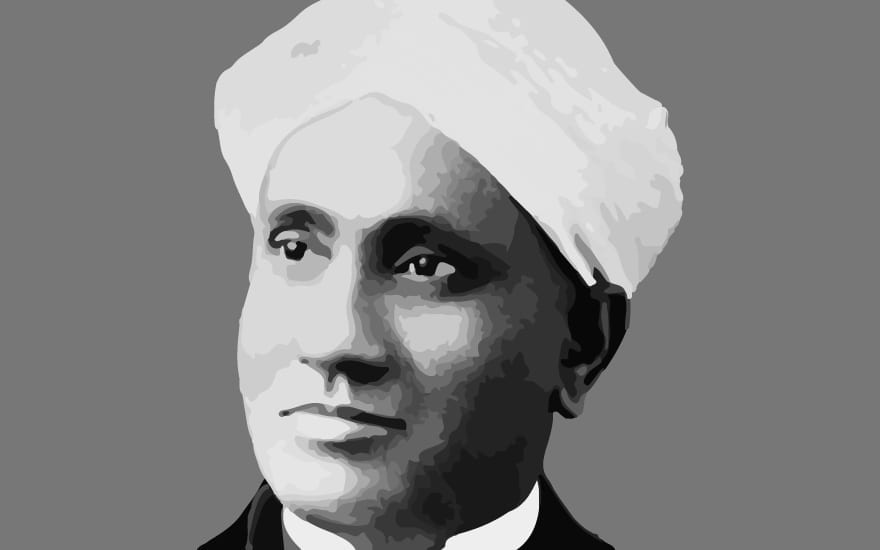
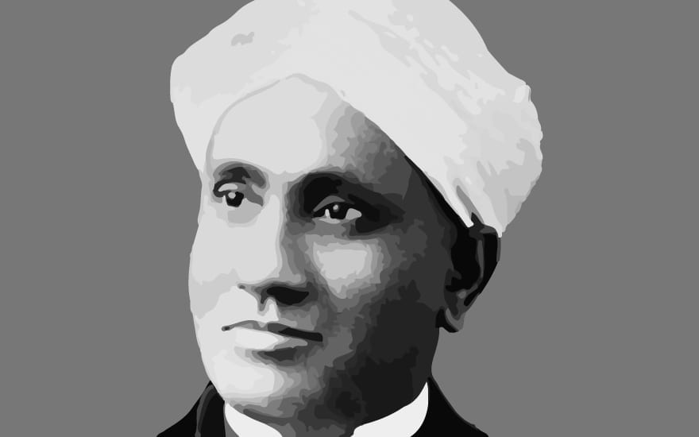

Early Life and Education
Chandrasekhara Venkata Raman, born on November 7, 1888, in Tiruchirappalli, India, was a bright and curious child. From a young age, he was fascinated by the mysteries of nature and the workings of the physical world. His father, a lecturer in mathematics and physics, nurtured his early interests in science. By the time Raman completed his schooling, he had already shown signs of brilliance in academics, particularly in mathematics and physics.
At the age of 16, he graduated with top honors from Presidency College, Madras, with a degree in physics. Despite health concerns, he continued his academic journey and pursued a master's degree, where he further honed his scientific knowledge. It was during this time that his fascination with light and its properties began to take shape.
Scientific Achievements and the Raman Effect
C.V. Raman's most notable scientific contribution came in 1928 when he discovered the phenomenon that would later be known as the Raman Effect. While studying the scattering of light through different materials, Raman observed that a small portion of the light changed in wavelength due to interactions with the material's molecules. This discovery opened up new avenues in the understanding of molecular structure and light scattering, and it had profound implications for various scientific fields such as chemistry, biology, and medicine.
For this groundbreaking work, Raman was awarded the Nobel Prize in Physics in 1930, becoming the first Asian to receive a Nobel in the sciences. The Raman Effect continues to be a cornerstone in spectroscopy and is used in various modern technologies to analyze the composition of materials.
Later Life and Legacy
After receiving international recognition, Raman continued his research and established the Raman Research Institute in Bangalore in 1948. As a mentor, he guided generations of scientists and played a crucial role in laying the foundation for scientific research in India. His contributions to the development of science education and research infrastructure in India remain unparalleled.
In recognition of his contributions to science, Raman was honored with numerous awards and accolades throughout his life, including the Bharat Ratna, India’s highest civilian honor, in 1954. Even after his passing on November 21, 1970, his legacy lives on through the countless students and researchers he inspired and the scientific advancements made possible by his discoveries.
Key Achievements
- Discovered the Raman Effect in 1928, for which he won the Nobel Prize in Physics in 1930.
- Established the Raman Research Institute in Bangalore, fostering scientific research and education in India.
- Received the Bharat Ratna, India’s highest civilian award, in 1954.
- Served as the first Indian director of the Indian Institute of Science, Bangalore.
- Published over 200 papers on topics ranging from acoustics to optics to quantum mechanics.
Photo Gallery
 
